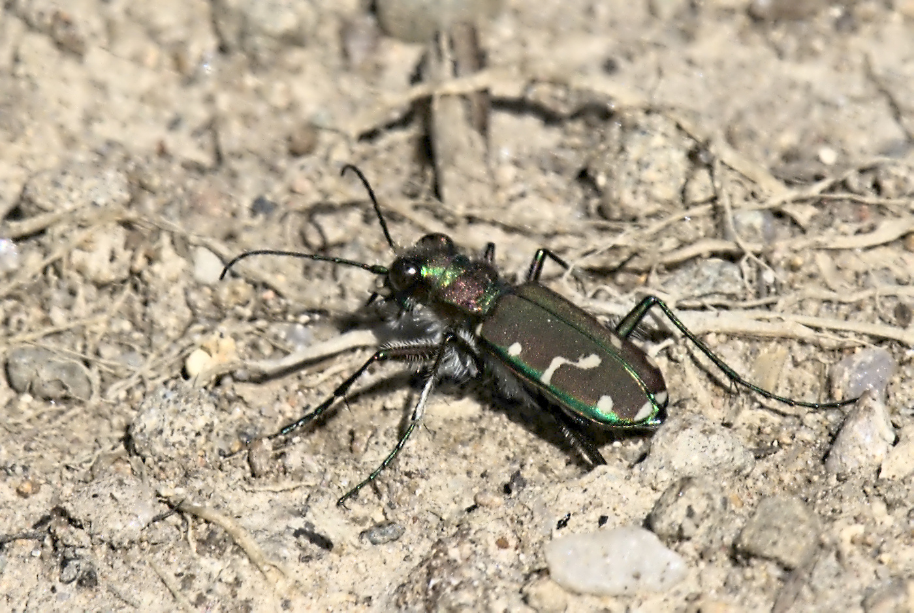

Common Claybank Tiger Beetle (photo: your name / date or iNaturalist observer)
Identification
- Small-medium (10–13 mm), bright coppery-red to green with white maculations (variable pattern).
- Legs metallic; fast on clay/sand banks.
- Similar to other claybank species but more common in NB.
Habitat in New Brunswick
Clay banks, sand pits, road cuts, and eroding slopes with bare ground. Prefers sunny, vertical or sloped clay exposures.
Flight Season in NB
May to August (peak June-July). Adults active on warm, sunny days.
Distribution & Notes
Scattered but locally common in southern and central NB where clay soils are exposed. Good indicator of bare, eroding habitats.